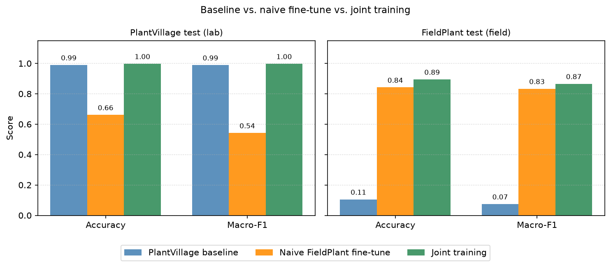
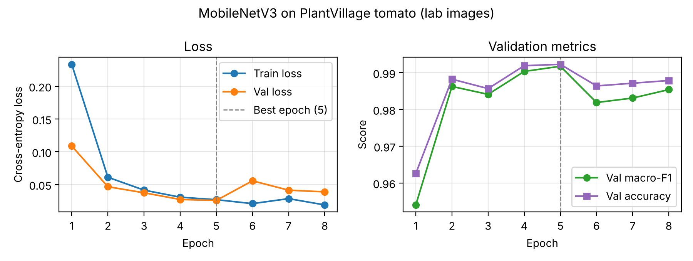
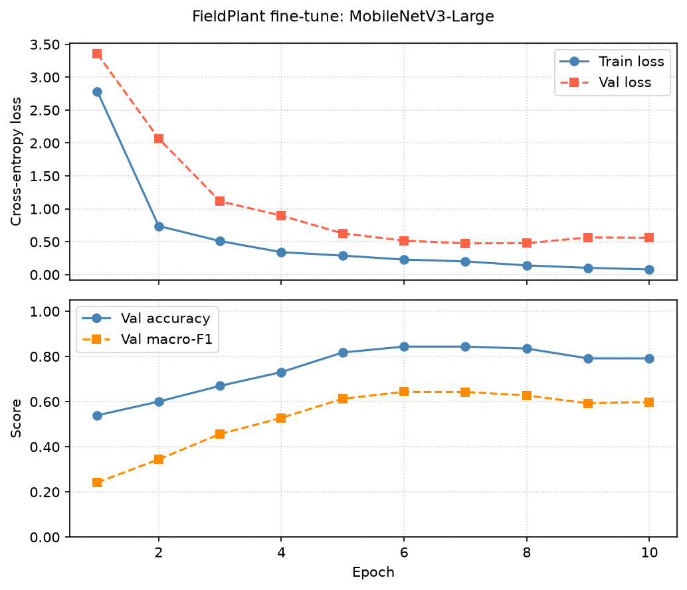
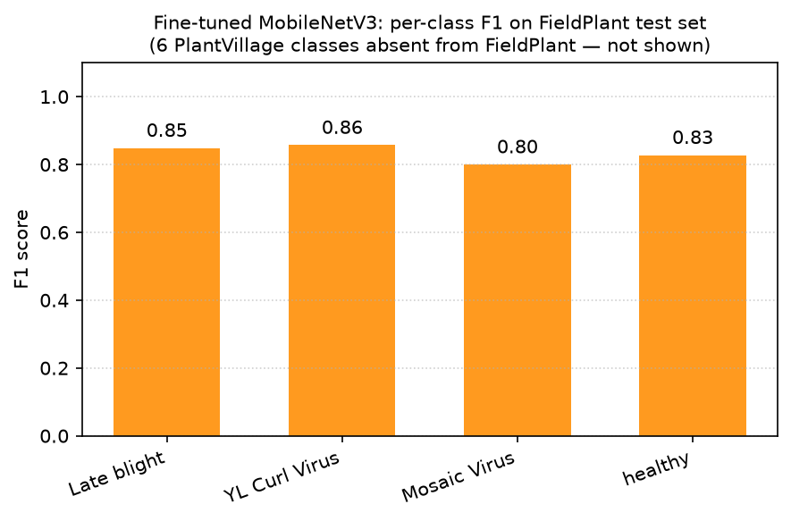
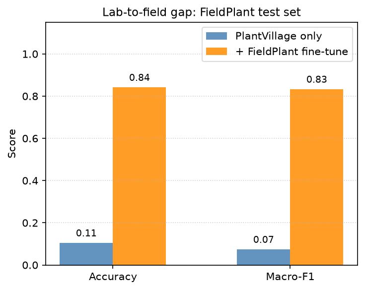
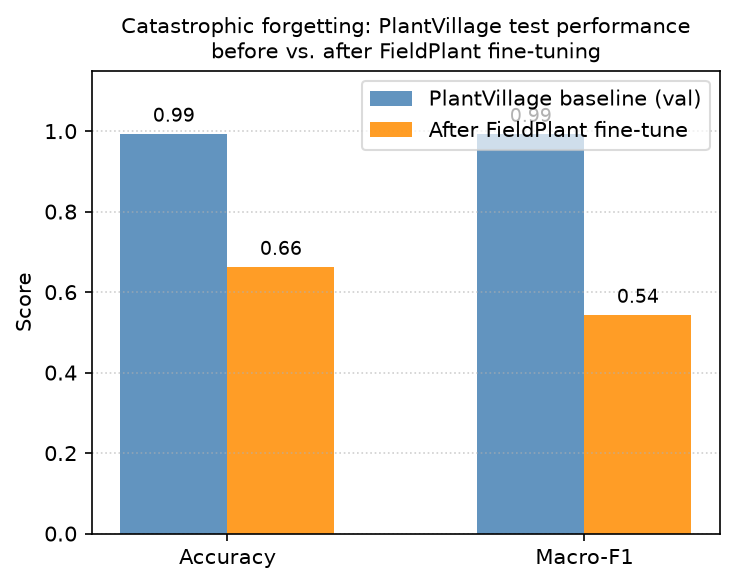

ARTE4110U Deep Learning Checkpoint
GitHub Repo Link: https://github.com/sufiyaarab/FoliageChecker
Group 1: [FoliageCheck]
Sufiya Arab - 100876515
Chimamaka Okechukwu - 100861474
Julian Olano Medina - 100855732
This project investigates automated, image-based diagnosis of tomato leaf diseases. Early detection of crop disease matters for global food security and for preventing yield loss for home gardeners [1]. The model takes a single RGB image of a tomato leaf and predicts one of ten classes (9 diseases or healthy) [2], with a confidence score. Models trained on clean lab images are known to lose accuracy on real-world field photos [2], [4], so we measure this lab-to-field gap and attempt to close it.
The main challenges are: (1) domain shift between lab images and field photos with variable lighting and complex backgrounds [4]; (2) out-of-distribution (OOD) rejection of non-tomato crops, non-leaf plant parts and unrepresented diseases [3]; and (3) fine-grained visual similarity between pathologies such as early blight, late blight and target spot [2].
Related work. CNNs learn visual features directly from images [13], and Mohanty et al. [2] showed that CNNs fine-tuned on PlantVillage reach high accuracy across 38 crop-disease classes, but only on lab images. Moupojou et al. [5] built FieldPlant, annotated field images of corn, cassava and tomato; we use its tomato subset to close the gap and the other crops as OOD inputs. MobileNetV3 [14] is designed for mobile devices, which fits diagnosis from smartphone photos, so it is our backbone.
PlantVillage [2]: 18,146 tomato leaf images in 10 classes (9 diseases and healthy), taken in lab conditions on plain backgrounds; 21 exact duplicates were removed before splitting.
FieldPlant [5]: a Roboflow COCO export of field photos of corn, cassava and tomato with leaf bounding boxes. Each tomato box is cropped to a single-leaf image and its label mapped onto the PlantVillage classes (Table A1). Only 4 of the 10 classes have a match, leaving 817 field leaves, so field results cover those 4 classes only.
OOD sets (never used for training): 2,800 non-tomato PlantVillage leaves from 13 other crops, and 1,236 FieldPlant leaves (834 corn, 402 cassava). Class imbalance: in PlantVillage, Yellow Leaf Curl Virus is 29.5% of training images and mosaic virus 2.1%; FieldPlant is more skewed (286 late blight training leaves vs 13 mosaic virus).
Both datasets are split 70 / 15 / 15 (train / val / test), stratified by class, with random seed 4110. This gives 12,700 / 2,723 / 2,723 PlantVillage images and 569 / 115 / 133 FieldPlant leaves (per class in Table A2). FieldPlant is split by source photo, so leaves cropped from the same photo never appear in two splits.
Every image is resized to 224 × 224, the native input size of MobileNetV3, and normalized with the ImageNet mean and standard deviation [6], as the pretrained weights require. The only training augmentations are random horizontal and vertical flips [7]. FieldPlant leaves are cropped from their bounding boxes (Appendix A). Changes from the proposal are listed in Appendix B.
The baseline is MobileNetV3-Large [14] initialized from ImageNet weights [6], a standard transfer-learning setup [9]. Its 1000-class classifier is replaced by a dropout layer (p = 0.2) and a linear layer with 10 outputs, and it is trained on PlantVillage only. It replaces both models named in the proposal (Appendix B), so this report compares training strategies, not architectures.
Both methods start from the baseline checkpoint and update all layers. Naive fine-tuning continues training on the 569 FieldPlant training leaves only. Joint training continues training on the PlantVillage and FieldPlant training sets merged into one (13,269 images), so the model keeps seeing all ten lab classes. Every model is evaluated on both test sets, to measure the lab-to-field gap and any forgetting.
All runs minimise cross-entropy with AdamW [10] (full settings in Table B1). The baseline uses a learning rate of 3 × 10⁻⁴ for 8 epochs. The two later runs use 1 × 10⁻⁴, because large updates would destroy what the checkpoint already learned (naive: 10 epochs; joint: 15). The epoch with the best validation macro-F1 is kept, because the classes are imbalanced. Batch size and epochs differ between the naive and joint runs, so that comparison is not fully controlled.
| Model | PlantVillage accuracy | PlantVillage macro-F1 | FieldPlant accuracy | FieldPlant macro-F1 |
|---|---|---|---|---|
| PlantVillage baseline | 0.990 | 0.989 | 0.105 | 0.074 |
| Naive fine-tune | 0.661 | 0.542 | 0.842 | 0.833 |
| Joint training | 0.998 | 0.998 | 0.895 | 0.866 |

The baseline converges within a few epochs. Validation macro-F1 peaks at epoch 5 (0.992); afterwards validation loss rises while training loss keeps falling (mild overfitting), so the epoch-5 checkpoint is kept. The naive fine-tune peaks at epoch 6 of 10 (Figure C1), joint training at 12 of 15.

The lab-to-field gap is severe. The baseline scores 99.0% on the PlantVillage test set but only 10.5% on FieldPlant leaves (macro-F1 0.074), below chance (25%) for the 4 field classes. This confirms the domain-shift problem raised in [2], [4].
Naive fine-tuning recovers field accuracy, but forgets the lab classes. Fine-tuning on 569 field leaves lifts FieldPlant accuracy to 84.2% (macro-F1 0.833), and all four classes reach F1 ≥ 0.80 (Figure C2). However, PlantVillage accuracy falls from 99.0% to 66.1% and macro-F1 from 0.989 to 0.542. This is catastrophic forgetting [17]: training only on the small field set overwrites what was learned from 12,700 lab images.
Joint training removes the forgetting. Training on both datasets keeps PlantVillage at 99.8% accuracy, slightly above the baseline. It also beats the naive fine-tune on FieldPlant: 89.5% vs 84.2% accuracy and 0.866 vs 0.833 macro-F1, with gains in late blight (F1 0.848 → 0.908) and healthy (0.828 → 0.899) (Table C1). With 133 test leaves, the 5.3-point gain is 7 leaves, so it must be repeated across seeds before we call it significant. The main result is that one model now handles both lab and field photos.
Caveats. Mosaic virus has only 3 FieldPlant test leaves (2 correct), so its F1 is very uncertain, and the 6 classes without FieldPlant data cannot be evaluated in the field.
The controlled experiment planned in the proposal, PlantVillage-only vs PlantVillage + FieldPlant, is complete (Section 4), and joint training was added to fix the forgetting it revealed. For the final report we will add OOD rejection using energy scores [12] vs maximum softmax probability [3], scored by AUROC on the OOD sets (the scoring script, ood_eval.py, is written; results are not yet reported). We will also measure calibration (Expected Calibration Error, temperature scaling), produce confusion matrices [15] and Grad-CAM maps [16] for field leaves, and repeat the naive and joint runs over at least 3 seeds for confidence intervals. Stretch goals are listed in Appendix B.
We have five main risks to manage: (1) FieldPlant covers only 4 of the 10 classes, which limits field results to those 4. (2) With only 569 field training leaves the model could overfit; best-val-macro-F1 checkpointing acts as early stopping, and joint training also reduces this risk. (3) The FieldPlant test split is small (133 leaves), so results are noisy; we will report confidence intervals across seeds. (4) Near-duplicate photos in PlantVillage might inflate our 99% score; exact duplicates are removed and a near-duplicate check is planned. (5) Compute is no longer the bottleneck (about 45 s per joint epoch); the main limit is the small amount of field data.
| Week | Action items | Owner |
|---|---|---|
| Nov 21 - Nov 27 | OOD rejection, calibration, confusion matrices, Grad-CAM, multi-seed runs. | Julian Olano Medina / Chimamaka Okechukwu |
| Nov 28 - Dec 4 | Final project report writing and code repository cleanup. | All members |
[1] S. Savary, L. Willocquet, S. J. Pethybridge, P. Esker, N. McRoberts, and A. Nelson, "The global burden of pathogens and pests on major food crops," Nature Ecology & Evolution, vol. 3, no. 3, pp. 430-439, 2019.
[2] S. P. Mohanty, D. P. Hughes, and M. Salathé, "Using deep learning for image-based plant disease detection," Front. Plant Sci., vol. 7, p. 1419, 2016, doi: 10.3389/fpls.2016.01419. Dataset: https://github.com/spMohanty/PlantVillage-Dataset. License: Creative Commons Attribution-ShareAlike 3.0 Unported (CC BY-SA 3.0).
[3] D. Hendrycks and K. Gimpel, "A baseline for detecting misclassified and out-of-distribution examples in neural networks," in Proc. Int. Conf. Learn. Represent. (ICLR), 2017.
[4] K. P. Ferentinos, "Deep learning models for plant disease detection and diagnosis," Comput. Electron. Agric., vol. 145, pp. 311-318, 2018.
[5] E. Moupojou et al., "FieldPlant: A dataset of field plant images for plant disease detection and classification with deep learning," IEEE Access, vol. 11, pp. 35398-35410, 2023, doi: 10.1109/ACCESS.2023.3263042. Dataset license: Creative Commons Attribution 4.0 International (CC BY 4.0).
[6] J. Deng, W. Dong, R. Socher, L.-J. Li, K. Li, and L. Fei-Fei, "ImageNet: A large-scale hierarchical image database," in Proc. IEEE Conf. Comput. Vis. Pattern Recognit. (CVPR), 2009, pp. 248-255.
[7] C. Shorten and T. M. Khoshgoftaar, "A survey on image data augmentation for deep learning," J. Big Data, vol. 6, no. 1, p. 60, 2019.
[8] C. Szegedy et al., "Going deeper with convolutions," in Proc. IEEE Conf. Comput. Vis. Pattern Recognit. (CVPR), 2015, pp. 1-9.
[9] S. J. Pan and Q. Yang, "A survey on transfer learning," IEEE Trans. Knowl. Data Eng., vol. 22, no. 10, pp. 1345-1359, 2010.
[10] I. Loshchilov and F. Hutter, "Decoupled weight decay regularization," in Proc. Int. Conf. Learn. Represent. (ICLR), 2019.
[11] A. Krizhevsky, I. Sutskever, and G. E. Hinton, "ImageNet classification with deep convolutional neural networks," in Proc. Adv. Neural Inf. Process. Syst. (NeurIPS), 2012, pp. 1097-1105.
[12] W. Liu, X. Wang, J. Owens, and Y. Li, "Energy-based out-of-distribution detection," in Proc. Adv. Neural Inf. Process. Syst. (NeurIPS), vol. 33, 2020, pp. 21464-21475.
[13] Y. LeCun, Y. Bengio, and G. Hinton, "Deep learning," Nature, vol. 521, no. 7553, pp. 436-444, 2015.
[14] A. Howard et al., "Searching for MobileNetV3," in Proc. IEEE/CVF Int. Conf. Comput. Vis. (ICCV), 2019, pp. 1314-1324.
[15] M. Sokolova and G. Lapalme, "A systematic analysis of performance measures for classification tasks," Inf. Process. Manage., vol. 45, no. 4, pp. 427-437, 2009.
[16] R. R. Selvaraju, M. Cogswell, A. Das, R. Vedantam, D. Parikh, and D. Batra, "Grad-CAM: Visual explanations from deep networks via gradient-based localization," in Proc. IEEE Int. Conf. Comput. Vis. (ICCV), 2017, pp. 618-626.
[17] J. Kirkpatrick et al., "Overcoming catastrophic forgetting in neural networks," Proc. Natl. Acad. Sci. USA, vol. 114, no. 13, pp. 3521-3526, 2017, doi: 10.1073/pnas.1611835114.
FieldPlant's tomato labels were mapped onto the PlantVillage classes so that a label index means the same disease in both datasets.
| FieldPlant class | Mapped to PlantVillage class |
|---|---|
| Tomato_Mildiou / Tomato blight leaf | Late blight |
| Tomato_Leaf_Curling / Tomato leaf yellow virus | Yellow Leaf Curl Virus |
| Tomato_Mosaic / Tomato leaf mosaic virus | Mosaic virus |
| Tomato_healthy | Healthy |
| Tomato Brown Spots (1,620 boxes), bacterial wilt (2 boxes) | Dropped: no PlantVillage match |
Dropping Brown Spots, the largest FieldPlant tomato class, is a limitation of aligning the two datasets. Mapping "Leaf Curling" to Yellow Leaf Curl Virus is also an approximation. Each bounding box is expanded to a square with a 10% margin and cropped from the photo before resizing, so leaves are not squashed. Boxes smaller than 32 px on a side are discarded (1 box removed).
| Class | PlantVillage (train / val / test) | FieldPlant (train / val / test) |
|---|---|---|
| 0 Bacterial spot | 1,489 / 319 / 319 | none |
| 1 Early blight | 700 / 150 / 150 | none |
| 2 Late blight | 1,331 / 285 / 285 | 286 / 55 / 63 |
| 3 Leaf mold | 666 / 143 / 143 | none |
| 4 Septoria leaf spot | 1,239 / 266 / 266 | none |
| 5 Spider mites | 1,174 / 251 / 251 | none |
| 6 Target spot | 982 / 211 / 211 | none |
| 7 Yellow Leaf Curl Virus | 3,749 / 804 / 804 | 77 / 16 / 22 |
| 8 Mosaic virus | 261 / 56 / 56 | 13 / 3 / 3 |
| 9 Healthy | 1,109 / 238 / 238 | 193 / 41 / 45 |
| Total | 12,700 / 2,723 / 2,723 | 569 / 115 / 133 |
Roboflow's augmented copies of a photo are collapsed into one before splitting. Every file in every split is recorded with a SHA-256 hash in split_manifest.json, so the splits can be reproduced.
The 2,800 non-tomato PlantVillage leaves are up to 100 images per class from apple, blueberry, cherry, corn, grape, orange, peach, pepper, potato, raspberry, soybean, squash and strawberry. The 21 exact duplicates removed from PlantVillage were found by hashing every image in the full colour set, and include identical images that appeared under two different class labels.
| Setting | PlantVillage baseline | Naive fine-tune | Joint training |
|---|---|---|---|
| Initialized from | ImageNet | PlantVillage checkpoint | PlantVillage checkpoint |
| Training data | PlantVillage (12,700) | FieldPlant (569) | Both (13,269) |
| Loss | Cross-entropy | Cross-entropy | Cross-entropy |
| Optimizer | AdamW [10] | AdamW | AdamW |
| Learning rate | 3 × 10⁻⁴ | 1 × 10⁻⁴ | 1 × 10⁻⁴ |
| Weight decay | 1 × 10⁻⁴ | 1 × 10⁻⁴ | 1 × 10⁻⁴ |
| Batch size | 32 | 16 | 32 |
| Epochs | 8 | 10 | 15 |
| Image size | 224 × 224 | 224 × 224 | 224 × 224 |
| Best epoch chosen by | Val macro-F1 | Val macro-F1 | Val macro-F1 |
| Seed | 4110 | 4110 | 4110 |
| Hardware | NVIDIA RTX 3060 | NVIDIA RTX 3060 | NVIDIA RTX 3060 |
The FieldPlant-only run uses batch size 16 to get more updates from its 569 images.
Stretch goals. If time allows, we will also run an EfficientNet-B0 comparison and test averaging predictions over several photos of the same plant.
Changes from the proposal.
| Class (FieldPlant test n) | Naive F1 | Naive recall | Joint F1 | Joint recall |
|---|---|---|---|---|
| Late blight (63) | 0.848 | 0.889 | 0.908 | 0.937 |
| Yellow Leaf Curl Virus (22) | 0.857 | 0.818 | 0.857 | 0.818 |
| Mosaic virus (3) | 0.800 | 0.667 | 0.800 | 0.667 |
| Healthy (45) | 0.828 | 0.800 | 0.899 | 0.889 |
FieldPlant macro-F1 is averaged over the 4 classes present in FieldPlant. Validation scores of the selected checkpoints: baseline 0.992 accuracy and 0.992 macro-F1 (2,723 PlantVillage images); joint 0.993 and 0.993 (2,838 images from both datasets). Source: the metrics_test_best*.json files in experiments/plantvillage_mobilenetv3, experiments/fieldplant_finetune_mobilenetv3 and experiments/joint_mobilenetv3.




| Member | Contribution |
|---|---|
| Sufiya Arab | Dataset downloading, tomato subset filtering, stratified splits, PlantVillage baseline training and evaluation. |
| Chimamaka Okechukwu | Report drafting, section editing, Git collaboration guidance. |
| Julian Olano Medina | Pre-processing pipeline, MobileNetV3 / EfficientNet-B0 integration, FieldPlant fine-tuning and joint training on the RTX 3060, label mapping, plot scripts, repository setup. |
AI disclosure. Claude (Anthropic) was used for Git guidance, drafting plot scripts, feedback on report drafts, and restructuring and formatting this report.